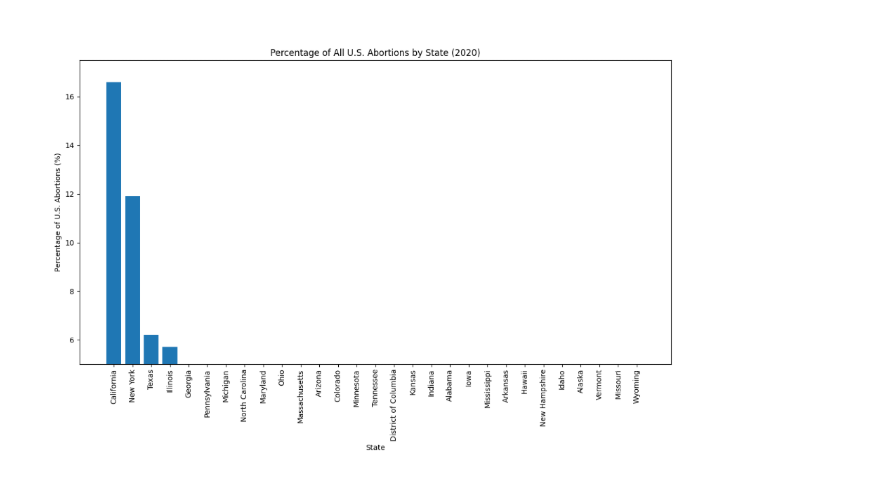
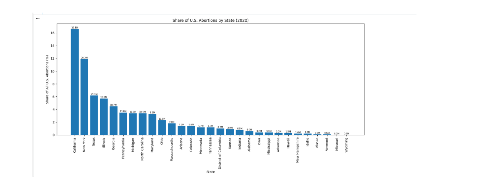

Proposition: California is a huge majority of the percentage of abortion rates in the U.S
FOR the Proposition

Design Decisions and Rationale:
- The design of the visualization emphasizes that California is the largest contributor to the overall abortion rate in the U.S.
- The bar chart starts at 5% to exclude smaller contributions from other states and to dramatize the contribution of California.
- Intentionally, the visualizations has a lack of information regarding state population and more context that would be needed for a complete earnest analysis.
AGAINST the Proposition

Design Decisions and Rationale:
- This visualization takes into account the population of each state, providing a more accurate representation of the abortion rates.
- The y-axis starts at 0 to provide a true representation of the data.
- Given the y-axis starting at 0, the visualization provides a more balanced view of the data, without any intentional distortion.
Final Reflection
While all visualizations were true, the chosen mode of visualization depends on the intended message and audience. The first visualization effectively highlights California's significant contribution to abortion rates, while the second provides a more balanced perspective by considering state populations, y-axis scaling, and overall data representation. The overall proposition is that visualizations can give the audience the same information but can invoke vastly different interpretations depending on how the data is presented.